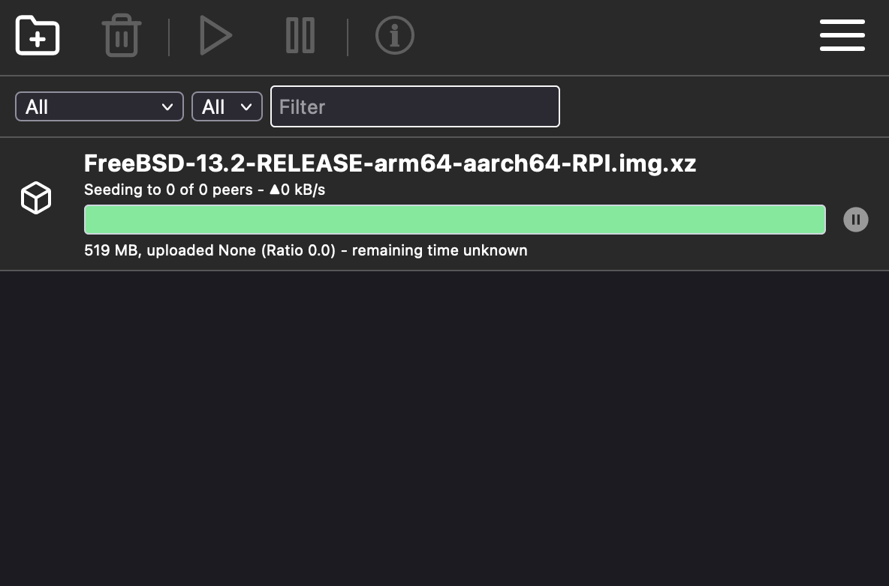

HOWTO: Install Transmission on FreeBSD 14.0
In this HOWTO we'll install Transmission on a Raspberry Pi. We'll run Transmission behind nginx which will have a TLS certificate provided by certbot/Let's Encrypt. Transmission will communicate with the internet through a WireGuard VPN, and Transmission will not be allowed to leak when the VPN goes down thanks to PF. In order to grant a TLS certificate to the server we'll need a domain name and the host will need an IPv6 GUA.
Setting up the Raspberry Pi
- Set up a domain or subdomain to point at your Raspberry Pi's globally routable IPv6 address (we'll use
example.invalidin this HOWTO) - Set up your router's firewall to pass in TCP packets on port 80 bound for your Raspberry Pi's IPv6 address (port 80 will only be used to redirect to HTTPS and to renew certificates, so it will be safe to leave open)
- Burn FreeBSD 14.0 to MicroSD card, insert into the Raspberry Pi, attach ethernet and power (guide to burning media on FreeBSD)
-
ssh-copy-id freebsd@example.invalid(the password isfreebsd) scp my-wireguard-config.conf freebsd@example.invalid-
ssh freebsd@example.invalid-
passwd(change your password to something other thanfreebsd) -
su(the password isroot) mkdir -p /usr/local/etcecho permit nopass :wheel > /usr/local/etc/doas.confpkg install -y doas
-
Basic setup
From now, all commands will assume you're logged into the Pi as user freebsd.
doas pkg install -y ca_root_nssdoas sysrc hostname=hostnamedoas sysrc ntpd_enable=YES ntpd_sync_on_start=YESecho 'name_servers="2620:fe::fe 9.9.9.10"' | doas tee /etc/resolvconf.confecho UseDNS no | doas tee -a /etc/ssh/sshd_configdoas mkdir -p /store/www /store/downloadsln -s /store/downloads
Set up nginx & Let's Encrypt
doas pkg install -y nginx py39-certbot-nginxdoas sysrc nginx_enable=YESdoas sysrc -f /etc/periodic.conf weekly_certbot_enable=YEScat <<EOF | doas tee /store/www/index.html <title>example.invalid</title> <link rel="icon" href="/transmission/web/images/favicon.png"> <h1>example.invalid</h1> <ul> <li><a href="/transmission/web/">Transmission</a></li> <li><a href="/downloads/">Downloads</a></li> </ul> EOF
cat <<EOF | doas tee /usr/local/etc/nginx/nginx.conf worker_processes 1; events { worker_connections 1024; } http { include mime.types; default_type application/octet-stream; sendfile on; keepalive_timeout 65; gzip on; server { listen [::]:80; server_name example.invalid; location / { alias /store/www/; index index.html; } location /downloads/ { alias /store/downloads/; autoindex on; autoindex_exact_size off; } location /transmission/ { proxy_pass http://127.0.0.1:9091; } } } EOF-
doas certbot --nginx -d example.invalid --email=your-email@example.invalid --agree-tos --no-eff-email
You should see the following message:Deploying certificate Successfully deployed certificate for example.invalid to /usr/local/etc/nginx/nginx.conf Congratulations! You have successfully enabled HTTPS on https://example.invalid
If you don't you should stop to investigate.
Set up Transmission
doas pkg install -y transmission-daemondoas chown transmission:transmission /store/downloadsdoas sysrc transmission_download_dir=/store/downloads transmission_enable=YES
Set up WireGuard
doas pkg install -y wireguard-toolsdoas cp my-wireguard-config.conf /usr/local/etc/wireguard/wg0.confdoas sysrc wireguard_interfaces=wg0 wireguard_enable=YESdoas service wireguard start- Test that your IP addresses have changed:
fetch --quiet --output=- http://ip6only.me/api/ && fetch --quiet --output=- http://ip4only.me/api/
Set up PF
cat <<EOF | doas tee /etc/pf.conf set skip on lo0 # Block all incoming connections from wg0 block in on wg0 # Prevent leaks from Transmission block user transmission pass on wg0 user transmission # But allow other users to do anything pass user != transmission EOF
Let's test that pf works correctly:
doas service pf onestart- If pf prevents you interacting over ssh, reboot it by pulling out unplugging the power cable and plugging it back in again.
doas service wireguard stopdoas -u transmission fetch --quiet --output=- http://ip6only.me/api/ ; doas -u transmission fetch --quiet --output=- http://ip4only.me/api/- You should see Host does not resolve twice.
doas service wireguard startdoas -u transmission fetch --quiet --output=- http://ip6only.me/api/ ; doas -u transmission fetch --quiet --output=- http://ip4only.me/api/- You should see the VPN's IP addresses.
Once you're satisfied that it's working correctly (and you've verified that you're not being blocked from sshing in), we can enable pf on boot:
doas sysrc pf_enable=YES
Login info & shell scripts
echo 'Welcome to hostname!' | doas tee /etc/motd.templateecho uptime > .logincat <<EOF | tee test.sh #!/bin/sh set -e whoami fetch --quiet --output=- http://ip6only.me/api/ | cut -d, -f2 fetch --quiet --output=- http://ip4only.me/api/ | cut -d, -f2 doas -u transmission whoami doas -u transmission fetch --quiet --output=- http://ip6only.me/api/ | cut -d, -f2 doas -u transmission fetch --quiet --output=- http://ip4only.me/api/ | cut -d, -f2 EOF
chmod 755 test.sh
Reboot & done
doas reboot- Visit
https://example.invalid/to see your server with links to Transmission and the downloads directory.
Now you're ready to download your favorite BSD without every other BitTorrent peer knowing your IP address!
